Exquisite International · Vol. 6 Iss. 2
A Cover Story, Across Borders
From Monaco to Manila and Los Angeles to Sydney — the international cover that marked SHEKINAIH SIEW SIN YAP and J AARON K DAVID as voices to watch.
Read the Feature →Exquisite International · Vol. 6 Iss. 2
International Humanitarian Leadership · Peace · Transformation · Global Impact
Continue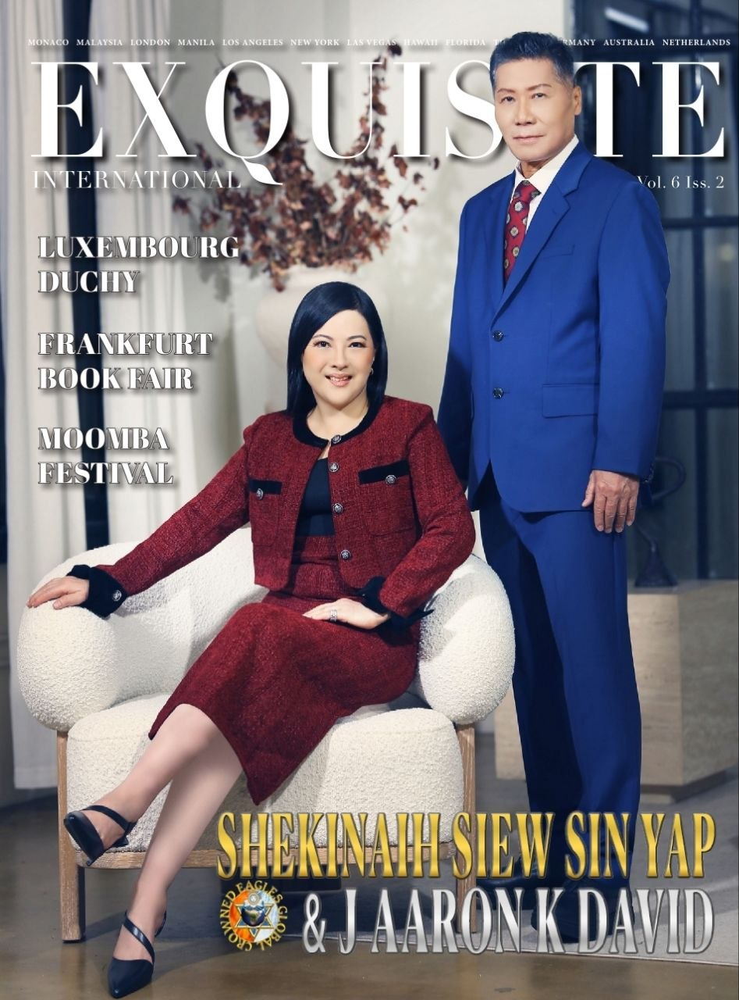
Featured In
Editorial recognition that reaches across continents — and the awards that came with it.
Exquisite International · Vol. 6 Iss. 2
From Monaco to Manila and Los Angeles to Sydney — the international cover that marked SHEKINAIH SIEW SIN YAP and J AARON K DAVID as voices to watch.
Read the Feature →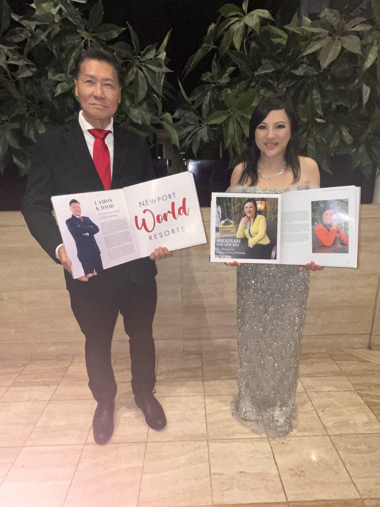
Manila Up International · 10th Anniversary
SHEKINAIH SIEW SIN YAP featured as “The Visionary Voice Bridging Heaven and Humanity”; J AARON K DAVID as “The Quiet Force Behind a Global Awakening.”
Read the Feature →Chapter One
Featured on the MegaSuccess Platform · Los Angeles, 2025
On the MegaSuccess stage in Los Angeles — the platform created by JT Foxx, the World's #1 Business Coach — SHEKINAIH SIEW SIN YAP and J AARON K DAVID were recognised for having built a successful company generating millions in revenue, placing them among the global figures, Fortune-level founders, and cultural icons who have shared that same set.
— On the MegaSuccess interview with JT Foxx · Los Angeles, November 2025
Chapter Two · About Us
The founding partnership behind Crowned Eagles Global — registered in Singapore, recognised across five nations, and received in rooms where faith, diplomacy, and humanitarian service converge.
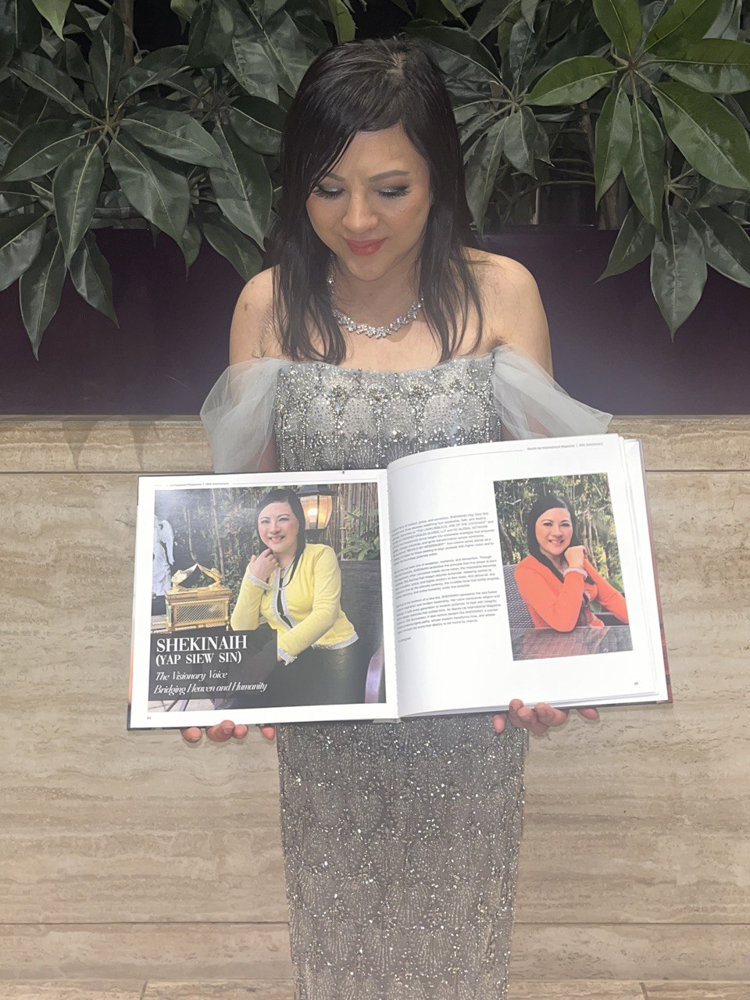
Founder & Managing Partner, Crowned Eagles Global LLP · Managing Partner, CE Global Network LLP · Managing Director — Crowned Eagles Global Group Holdings Pte. Ltd., CE Global Network International Pte. Ltd. & Crowned Eagles Global IP Holdings Pte. Ltd.
Core Business Strategist · International Humanitarian Leader · Transformation Speaker · Peace Advocate · Media Personality
Global Supreme Divinity & Full-Spectrum Transformation Leadership Award
— Mumbai, India
SHEKINAIH SIEW SIN YAP is the core business strategist and driving force of the group she leads — international humanitarian leader, transformation speaker, peace advocate, and media personality. She is Founder & Managing Partner of Crowned Eagles Global LLP and Managing Partner of CE Global Network LLP, and serves as Managing Director of Crowned Eagles Global Group Holdings Pte. Ltd., CE Global Network International Pte. Ltd., and Crowned Eagles Global IP Holdings Pte. Ltd. — the Singapore-incorporated holding companies through which the group's enterprises, international network, and intellectual property are owned and governed.
She is the strategic mind behind the enterprise — the architect who writes the blueprint from which its ventures are built and scaled. On the MegaSuccess stage in Los Angeles, JT Foxx — the World's #1 Business Coach — recognised that SHEKINAIH SIEW SIN YAP and J AARON K DAVID had built a successful company generating millions in revenue: commercial substance beneath the spiritual and humanitarian calling.
Her growing international presence spans Singapore, the United States, Thailand, India, and Oman, where she has been recognised across leadership, humanitarian, diplomacy, media, and peace platforms. She received the UNPKFC Certificate of Honor for positive social development and humanitarian contribution, was recognised through the DMGP Global Diplomacy Awards in Mumbai as a Global Divinity Ambassador, and was conferred the Global Supreme Divinity & Full-Spectrum Transformation Leadership Award in Mumbai, India.
Her public journey includes international magazine features, red-carpet appearances, leadership platforms, humanitarian outreach, food and blanket distribution for underprivileged communities in India, engagement with monks, peace activities in Kolkata, giving alms to approximately 1,600 monks, and an honourable audience with His Holiness the Dalai Lama.
SHEKINAIH SIEW SIN YAP unites strategic business vision, spiritual conviction, humanitarian compassion, and commanding leadership presence. At the heart of her work are cross-border business collaborations — multi-international partnerships she has forged across Singapore, the United States, India, Thailand, and the Middle East, connecting enterprises, markets, and leaders nation to nation. Her mission is to build sustainable, scalable enterprises, open new markets through international alliances, uplift communities, inspire transformation, and advance peace across borders.
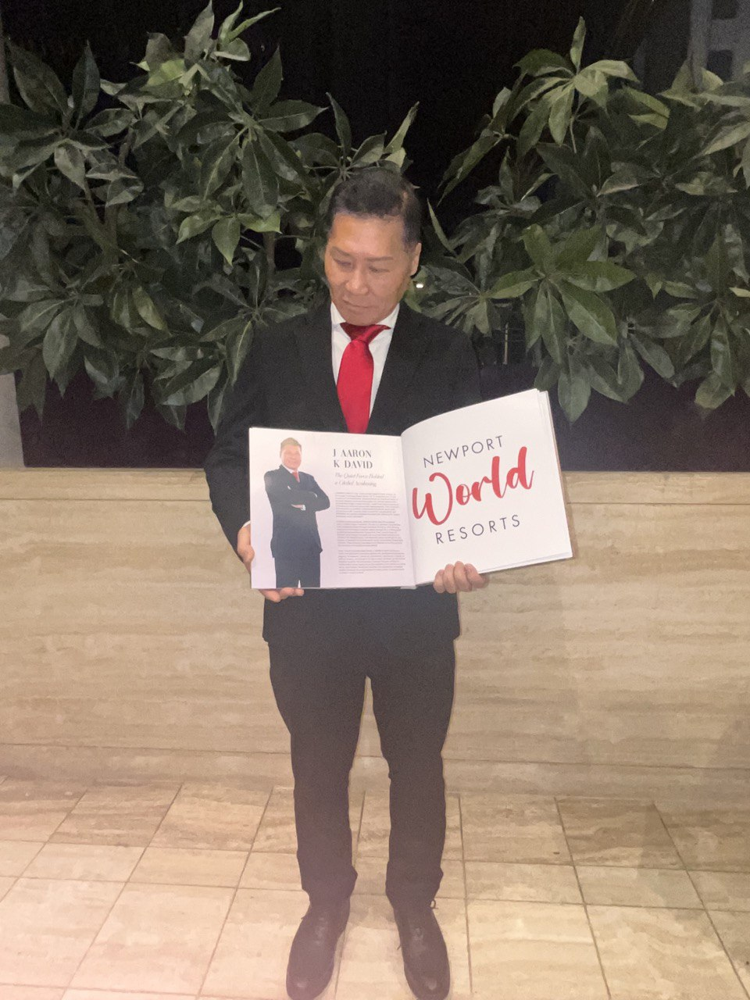
Co-Founder & Partner · Crowned Eagles Global
Co-Executing Business Strategist · International Humanitarian Leader · Peace Advocate · Transformation Speaker
Global Outstanding Transformation Leadership Excellence Award
— IISA 2026, Muscat, Oman
J AARON K DAVID is the co-executing force and operational backbone of the group's business strategy — international humanitarian leader, peace advocate, and transformation speaker, and Co-Founder & Partner of Crowned Eagles Global LLP and CE Global Network LLP, driving the delivery of the group's ventures across borders.
Where SHEKINAIH SIEW SIN YAP authors the blueprint and drives its execution as the group's chief strategist, J AARON K DAVID co-executes it alongside her — translating vision into operational reality across logistics, partnerships, and delivery. His calm leadership and strategic discipline co-execute that strategy into results — carrying the plan from paper to a company recognised on the MegaSuccess stage by JT Foxx as a successful enterprise generating millions in revenue.
He has participated in international leadership, diplomacy, business, and peace platforms across Singapore, the United States, Thailand, India, and Oman. He received the UNPKFC Certificate of Honor for positive social development and humanitarian contribution, was recognised at the DMGP Global Diplomacy Awards in Mumbai as a Global Peace Ambassador, and at IISA 2026 in Muscat, Oman received the Global Outstanding Transformation Leadership Excellence Award.
His international journey includes leadership stages, business networking platforms, media appearances, humanitarian missions, food and blanket distribution for underprivileged communities in India, engagement with monks and local communities, peace participation in Kolkata, and an honourable audience with His Holiness the Dalai Lama.
Through Crowned Eagles Global LLP and CE Global Network LLP, J AARON K DAVID drives a growing global mission combining business co-execution, logistics, humanitarian service, peace advocacy, and cross-border collaboration. His presence reflects discipline, integrity, and quiet authority.
Together they lead Crowned Eagles Global from Singapore — SHEKINAIH SIEW SIN YAP as the strategic architect who writes the blueprint and executes it, J AARON K DAVID as the co-executing force who builds it alongside her — a movement of enterprise, faith, peace, and humanitarian leadership now received on five continents.
A Year Across Nations
Eleven chapters. Seven cities. One unfolding mission.
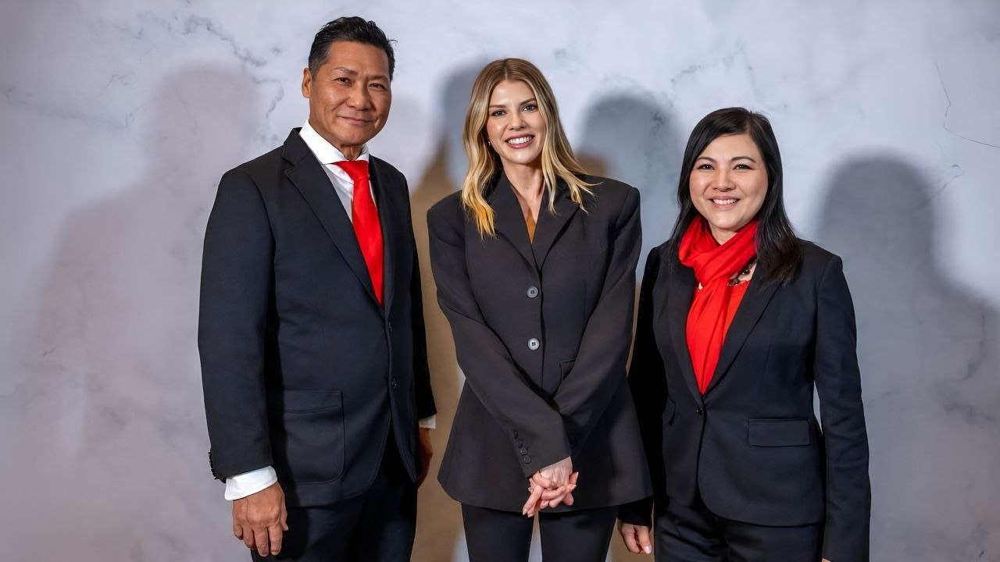
November 2025
MegaSuccess — Los Angeles
The JT Foxx MegaSuccess platform. International leadership presence on the Los Angeles stage — the season's defining marker.
Read More
2025
Manila Up — Red Carpet & Feature
SHEKINAIH SIEW SIN YAP featured as “The Visionary Voice Bridging Heaven and Humanity”, and J AARON K DAVID as “The Quiet Force Behind a Global Awakening” — published in the prestigious 10th Anniversary edition of Manila Up International Magazine.
At the Manila Up 10th Anniversary Gala, SHEKINAIH SIEW SIN YAP and J AARON K DAVID had the privilege of meeting Lisa Manibog Lew Brennan in person.
Read More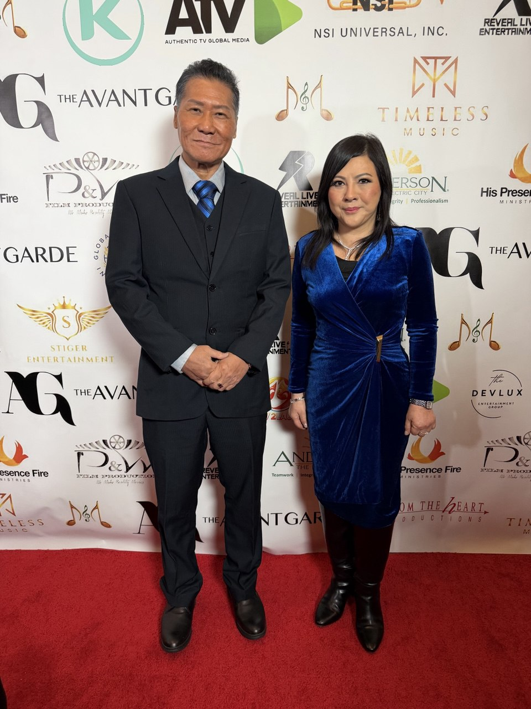
2025
Hollywood — Walk of Fame Red Carpet
SHEKINAIH SIEW SIN YAP and J AARON K DAVID walked the Hollywood red carpet during the week honouring the late Chadwick Boseman — Black Panther's iconic actor — receiving his posthumous Hollywood Walk of Fame star. The Los Angeles gathering brought together international media houses, entertainment figures, and humanitarian leaders.
Read More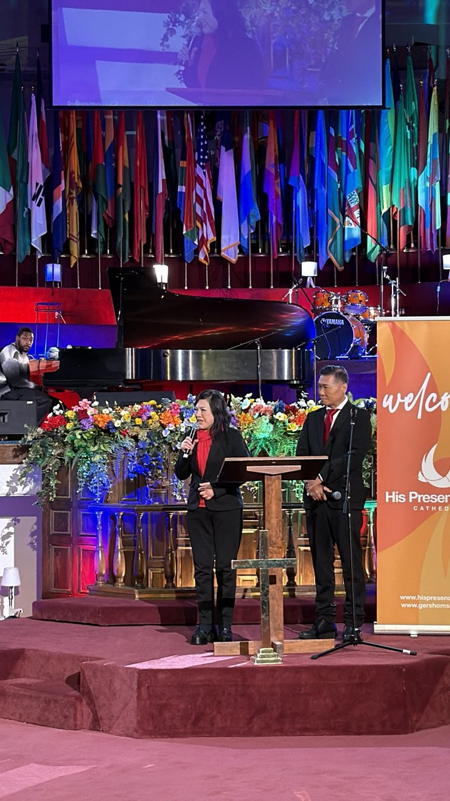
November 2025
His Presence Fire — Pray & Preach, Los Angeles
SHEKINAIH SIEW SIN YAP and J AARON K DAVID were invited to preach at His Presence Fire Ministries in Los Angeles under Dr. Gershom Sikaala — carrying a Sunday message of spiritual awakening, restoration, and breakthrough before the congregation.
Read More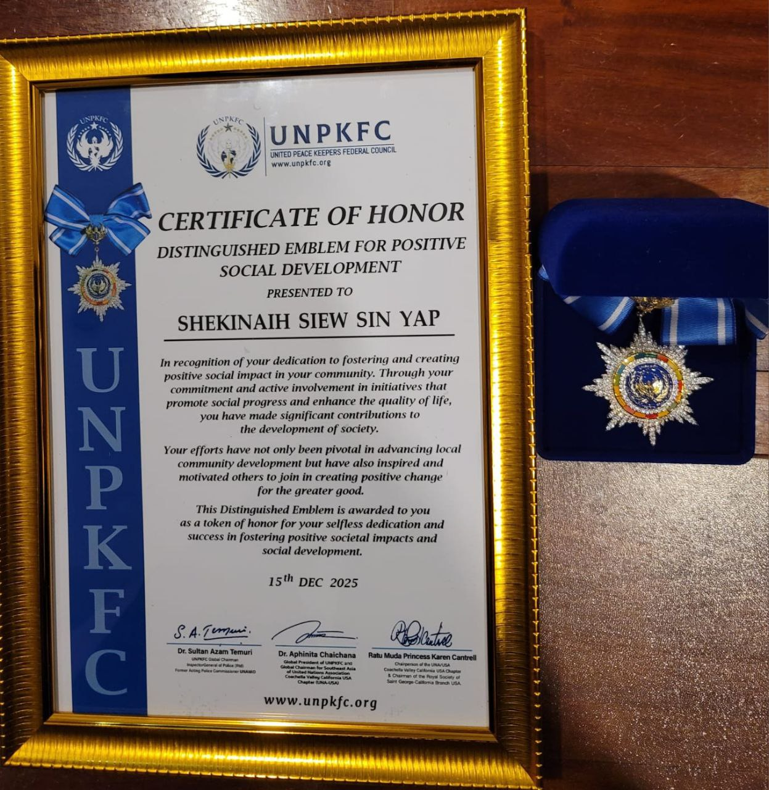
December 2025
Bangkok — UNPKFC Certificate of Honor
At the Global Leadership Summit 2025 in Bangkok — held in celebration of the United Nations' 80th Anniversary — SHEKINAIH SIEW SIN YAP and J AARON K DAVID were honoured with the Certificate of Honor — Distinguished Emblem for Positive Social Development, presented by the United Peace Keepers Federal Council (UNPKFC) under the leadership of its Global President Dr. Aphinita Chaichana, alongside international peers from across the region.
Read More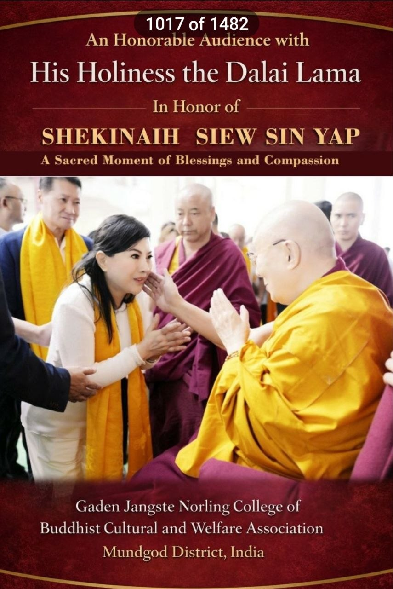
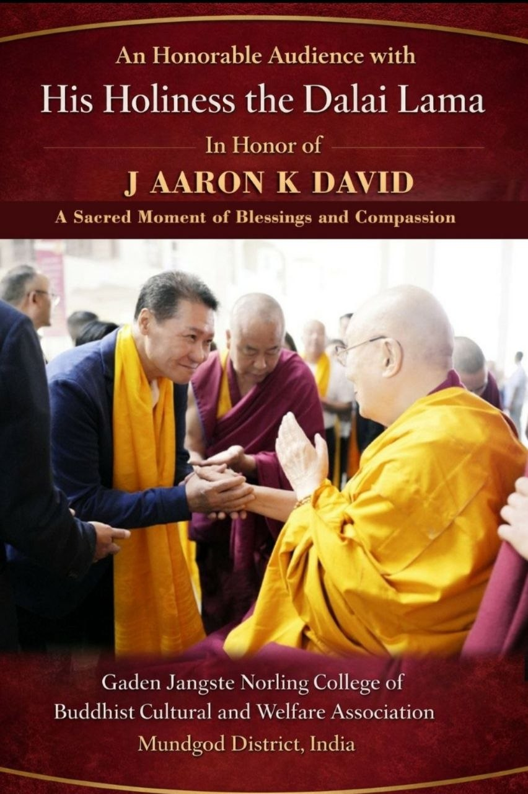
January 2026
Honorable Audience with His Holiness the Dalai Lama
SHEKINAIH SIEW SIN YAP and J AARON K DAVID stand under a divine mandate from the GOD OF THE UNIVERSE, entrusted with a sacred assignment of spiritual authority, blessing, and rulership stewardship.
Their audience with the Dalai Lama is regarded as a significant spiritual encounter, symbolizing the transfer of divine responsibility and the restoration of rulership authority back into the hand of THE GOD OF THE UNIVERSE.
In this mandate, SHEKINAIH SIEW SIN YAP stands as THE MAJOR, and J AARON K DAVID stands as THE MINOR, representing divine order, spiritual governance, and the purposes of THE GOD OF THE UNIVERSE on Earth.
Read More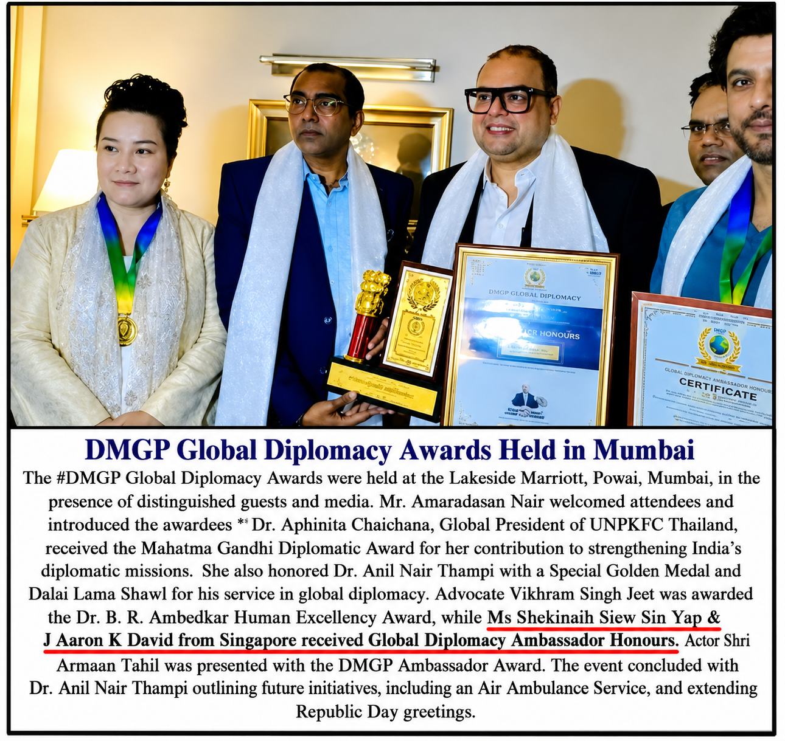
January 2026
Mumbai & Bollywood — DMGP Global Diplomacy Awards
The DMGP Global Diplomacy Awards were held at the Lakeside Marriott, Powai, Mumbai, in the presence of distinguished guests and media. SHEKINAIH SIEW SIN YAP and J AARON K DAVID — representing Singapore — received the Global Diplomacy Ambassador Honours, alongside Dr. Aphinita Chaichana (Global President, UNPKFC Thailand) and other distinguished awardees.
Read More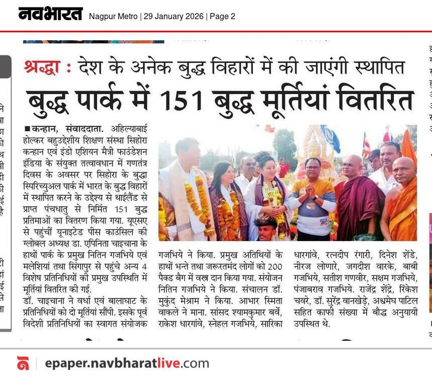
26 January 2026 · Republic Day
Nagpur — Buddhist Gala, Monk Awards & Feeding the Poor
Welcomed at the airport with flower garlands, SHEKINAIH SIEW SIN YAP and J AARON K DAVID were received as Chief Guests of the Buddhist gala at Buddha Spiritual Park, Sihora-Kanhan, Nagpur — felicitated by the senior monks at the morning Alms Offering & 151 Buddha Statue Distribution. By evening the mission moved to Tathagat Buddha Vihar, feeding the poor with rice, food and drinks while folded blankets and monk robes were offered to the resident sangha. Featured in Navbharat · Nagpur Metro (29 January 2026).
Read More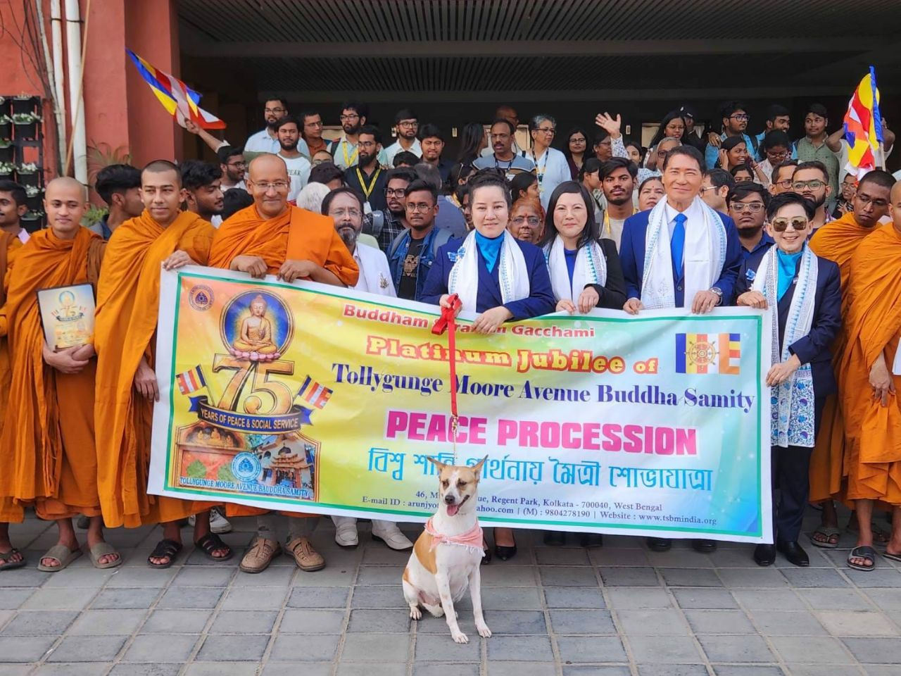
1 February 2026 · Maghi Purnima
Kolkata — The Walk for Peace & a Moment with Aloha
On Maghi Purnima, SHEKINAIH SIEW SIN YAP and J AARON K DAVID were honoured as Special Guests of the Walking-PEACE procession, walking at the head of the Tollygunge Sambodhi · 75 Years of Peace march beside the senior monastics. Along the way they paused for a quiet moment with Aloha, the monastery's rescued temple dog, and received commemorative 75 Years of Peace plaques.
Read More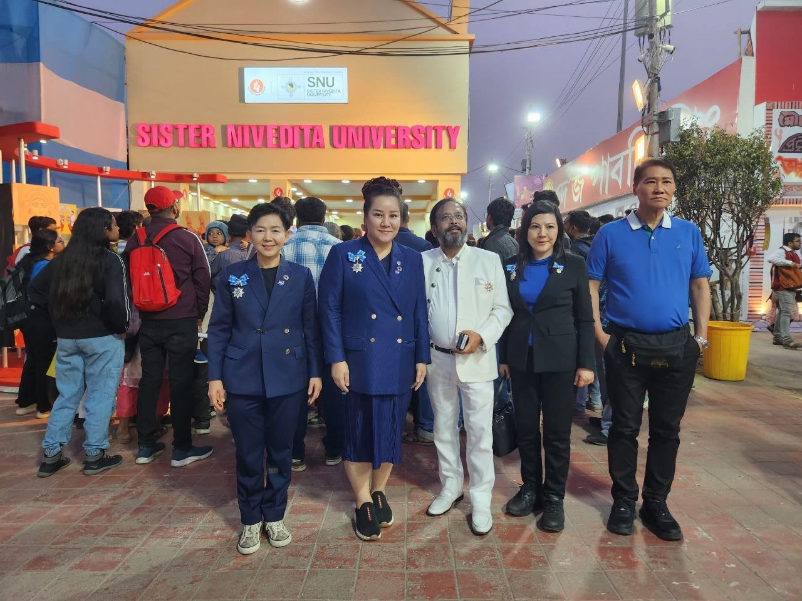
February 2026 · Kolkata
Kolkata — Sister Nivedita University & The Worship
Sister Nivedita University conferred its university award upon SHEKINAIH SIEW SIN YAP and J AARON K DAVID before the gathered university and monastic community. On a separate day during the same visit, the university invited them back to lead the worship at a funeral service, where they sang from Psalm 39 — "LORD, make me to know my end, and the measure of my days, what it is; that I may know how frail I am."
Read More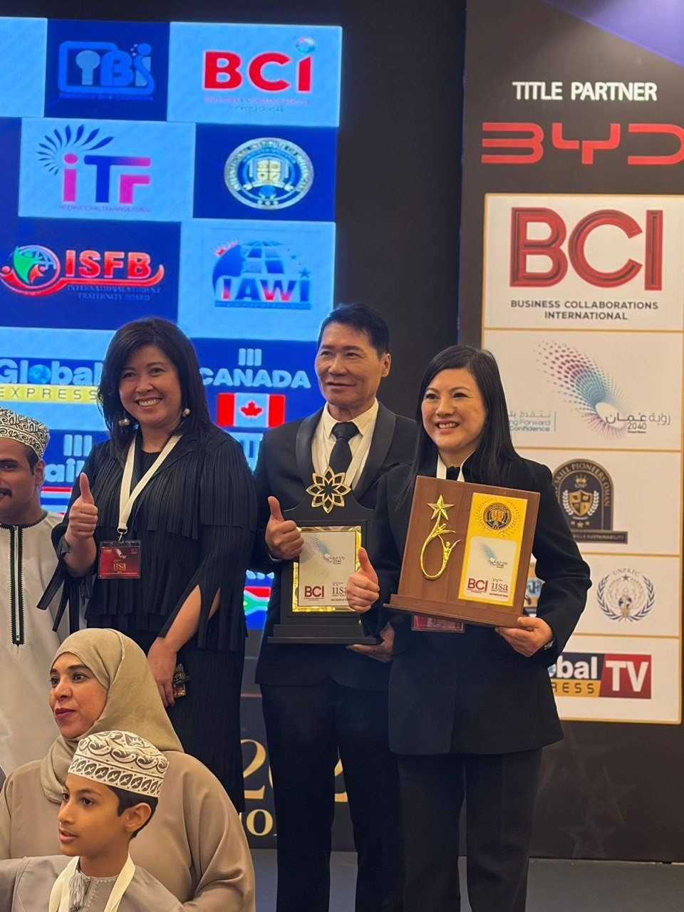
February 2026
Oman & UAE — IISA 2026
IISA 2026 5th Edition at the Sheraton Oman Hotel — keynote address by SHEKINAIH SIEW SIN YAP, recognition on stage with J AARON K DAVID, and a quiet ministry moment beyond the cameras. The delegation was also welcomed as distinguished guests at ILSOMAN — Integrated Logistic Services Oman, one of the Sultanate's leading freight-forwarding companies and a Vision 2040 partner. Theme: Oman Vision 2040.
Read MoreInternational Honours · 2025–2026
Awards, certificates, and credentials of association received across five nations — the documented record of the leadership rooms SHEKINAIH SIEW SIN YAP and J AARON K DAVID are now invited into.
December 2025 · Bangkok, Thailand
United Peace Keepers Federal Council (UNPKFC) · Global Leadership Summit 2025 · United Nations 80th Anniversary Commemoration
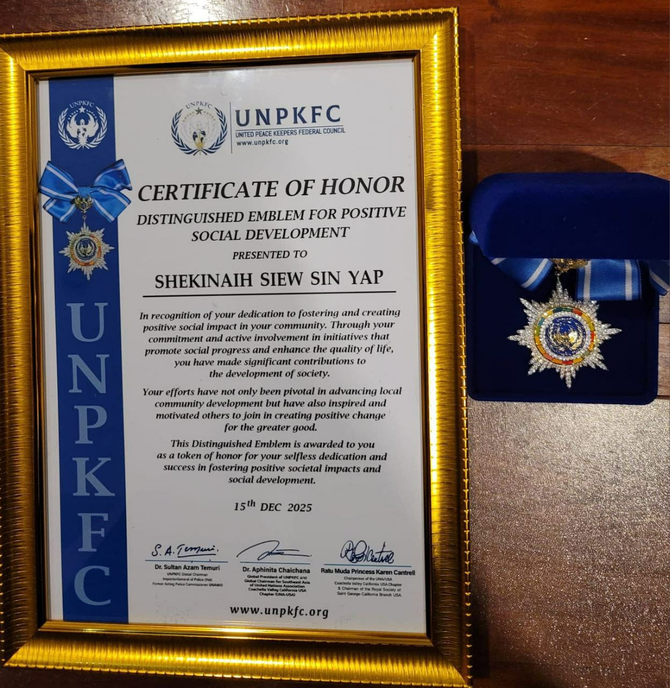
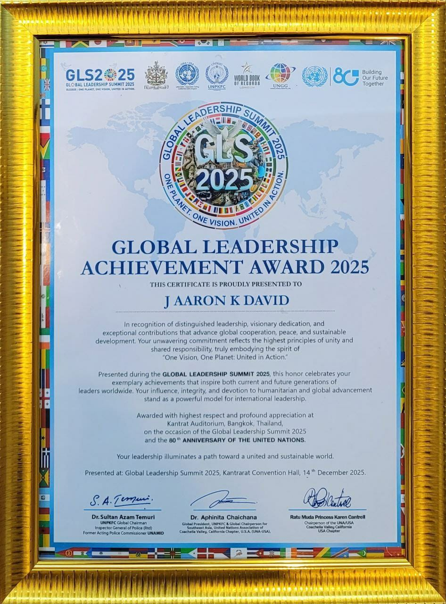
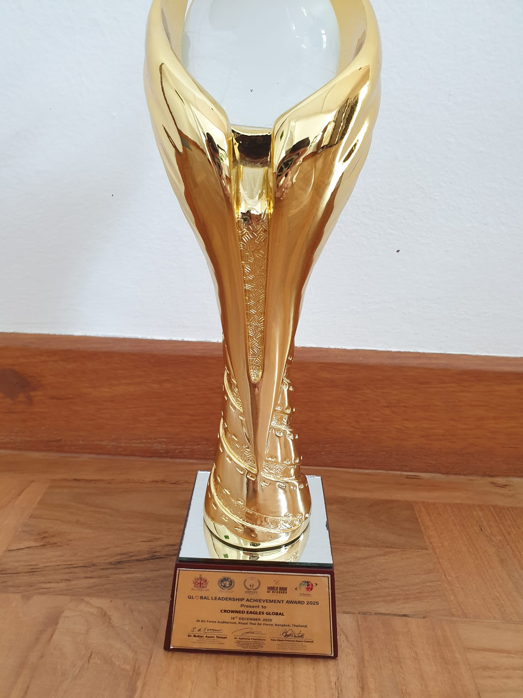
Presented at the prestigious Kantarat Auditorium during the United Nations' 80th Anniversary commemoration. The Distinguished Emblem and Certificate of Honor were conferred by Dr. Aphinita Chaichana and the UNPKFC leadership in the presence of international diplomats, dignitaries, and heads of mission.
November 2025 · Los Angeles, USA
Manila Up International Magazine · Hotel Indigo, Los Angeles · Formally recognised by the Los Angeles Board of Public Works

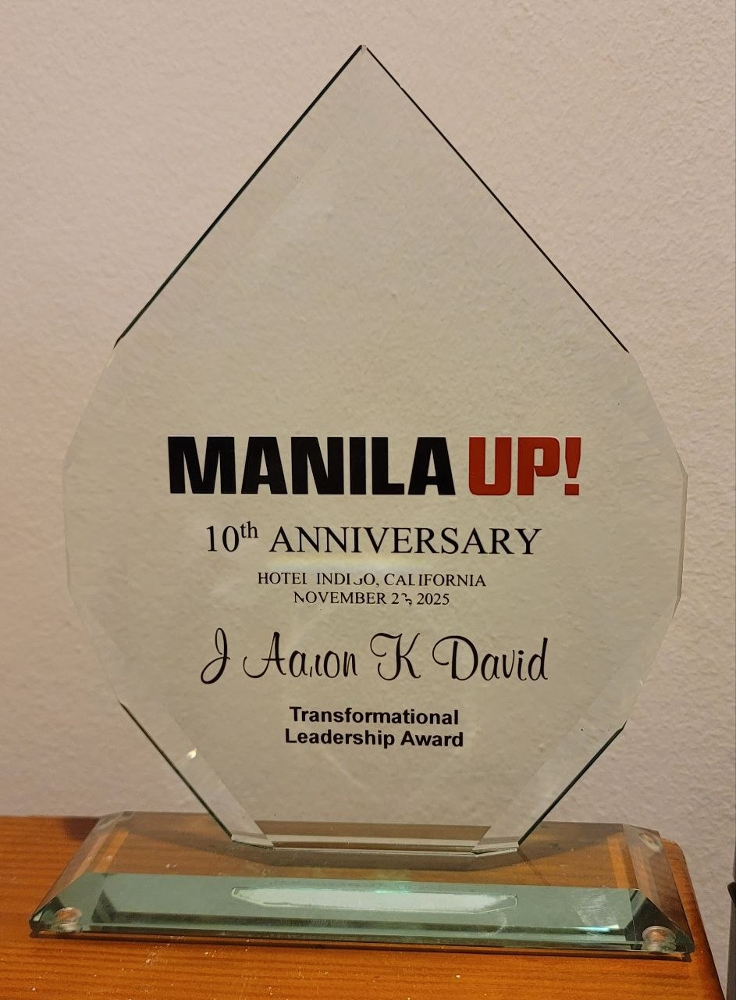
The 10th Anniversary Gala, an evening among Filipino-American Hollywood personalities and international changemakers. Both founders were also profiled as cover features in the commemorative anniversary issue — "The Visionary Voice Bridging Heaven and Humanity" and "The Quiet Force Behind a Global Awakening."
January 2026 · Mumbai, India
Diplomatic Mission Global Diplomacy (DMGP) · Lakeside Marriott Hotel, Powai · Conferred by Dr. Anil Nair Thampi & Dr. Aphinita Chaichana
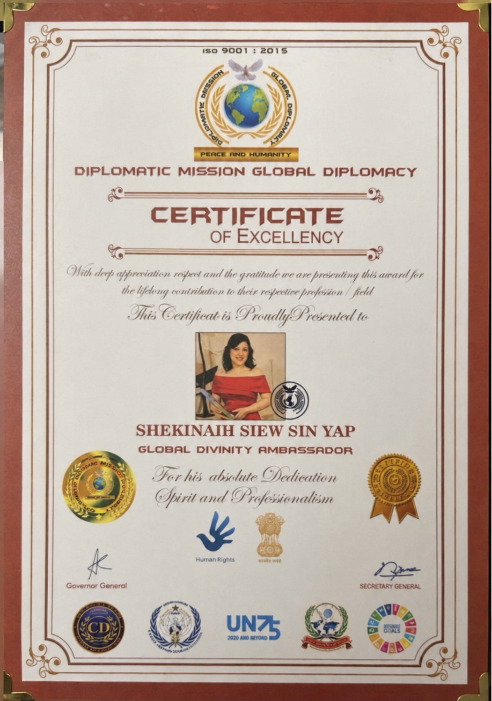
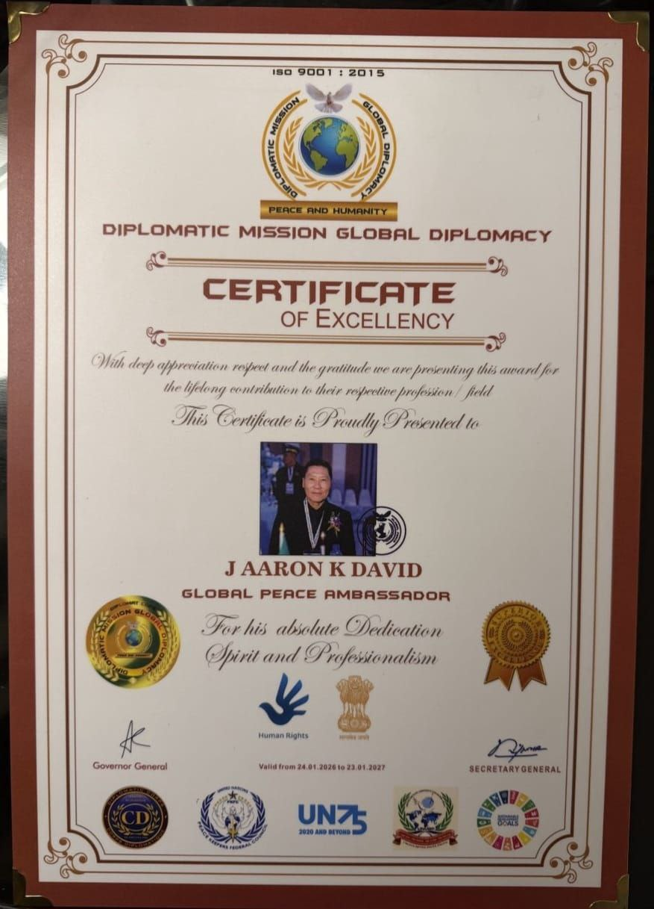
Presented in the presence of international delegates, dignitaries, Indian media, and Bollywood representatives. The DMGP Global Diplomacy Awards are among the leading recognitions for cross-border peace, spiritual leadership, and humanitarian diplomacy in Asia.
January 2026 · Hubballi, Karnataka
Gaden Jangtse College · Tibetan Settlement, Doeguling · Commemorative Audience Certificate
An audience with His Holiness the 14th Dalai Lama, Tenzin Gyatso, is a rare honour granted to very few. The commemorative certificates from Gaden Jangtse College and the ceremonial yellow khata mark a profound spiritual recognition received before hundreds of seated monks during the alms-offering ceremony.
January 2026 · Kolkata, India
Tollygunge Moore Avenue Buddha Samity · Walk for Peace Procession · 75-Year Commemoration
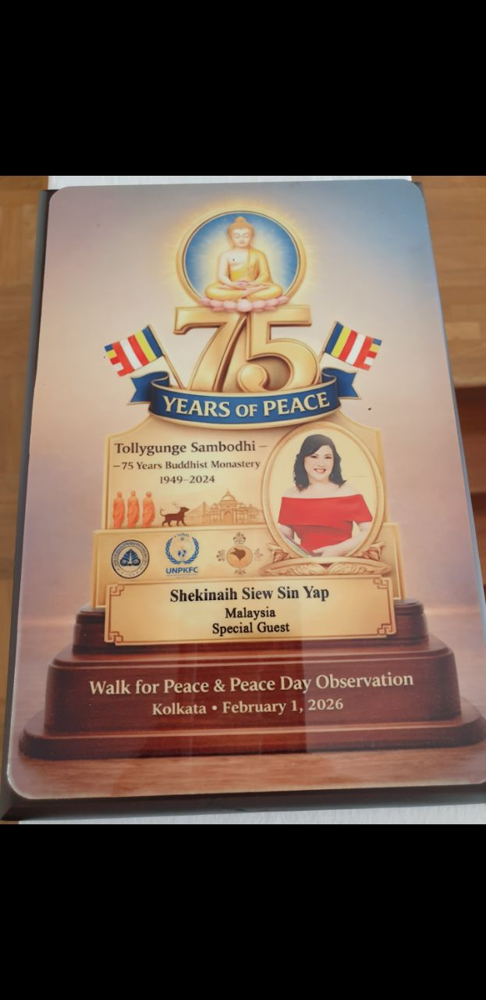
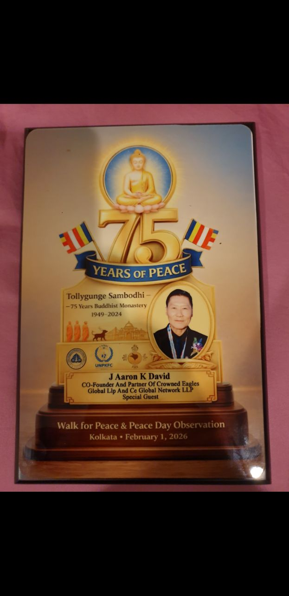
Conferred as Special Guests of the Walk for Peace marking 75 years of peace at the Tollygunge Sambodhi Buddhist Monastery — a landmark interfaith, cross-cultural commemoration in West Bengal, in the presence of UN Peace Keepers Federal Council leadership.
January 2026 · Kolkata, India
Sister Nivedita University · UN Peace Keepers Federal Council · Jointly received
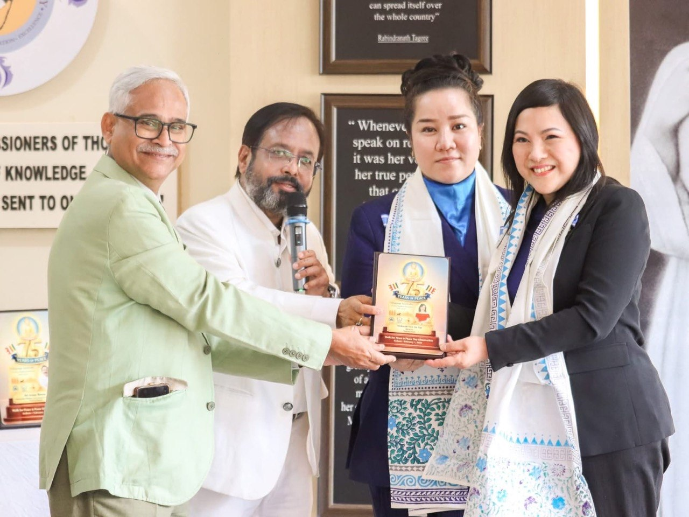
A jointly-received recognition for their participation in the Walk for Peace procession, presented in the presence of UNPKFC dignitaries and the Sister Nivedita University delegation — a public affirmation of cross-border peace leadership.
February 2026 · Muscat, Sultanate of Oman
I.I.I Group · Gulf Skill Pioneers & BCI (Business Collaborations International) · Sheraton Oman Hotel · Theme: Oman Vision 2040
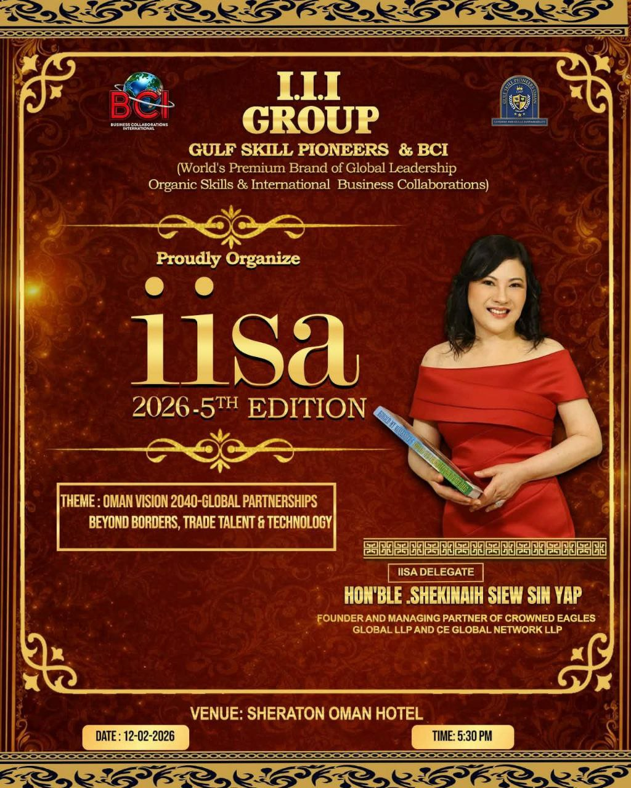

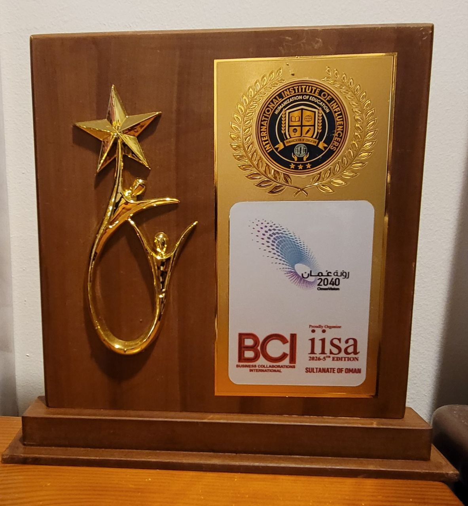
At the 5th edition of IISA, held at the Sheraton Oman Hotel under the theme Oman Vision 2040 — Global Partnerships Beyond Borders, Trade, Talent & Technology, SHEKINAIH SIEW SIN YAP and J AARON K DAVID were honoured as international delegates by the I.I.I Group and BCI, receiving the International Institute of Influencers recognition before an assembly of delegates representing nations across the globe.
"Recognition is not what they sought — it is what their work continues to attract."
Subscribe & Watch
Four channels. One mission.
The Closing Frame · Exquisite International · Vol. 6 Issue 2
SHEKINAIH SIEW SIN YAP and J AARON K DAVID — photographed and named as the front cover of Exquisite International Magazine, Vol. 6 Issue 2.
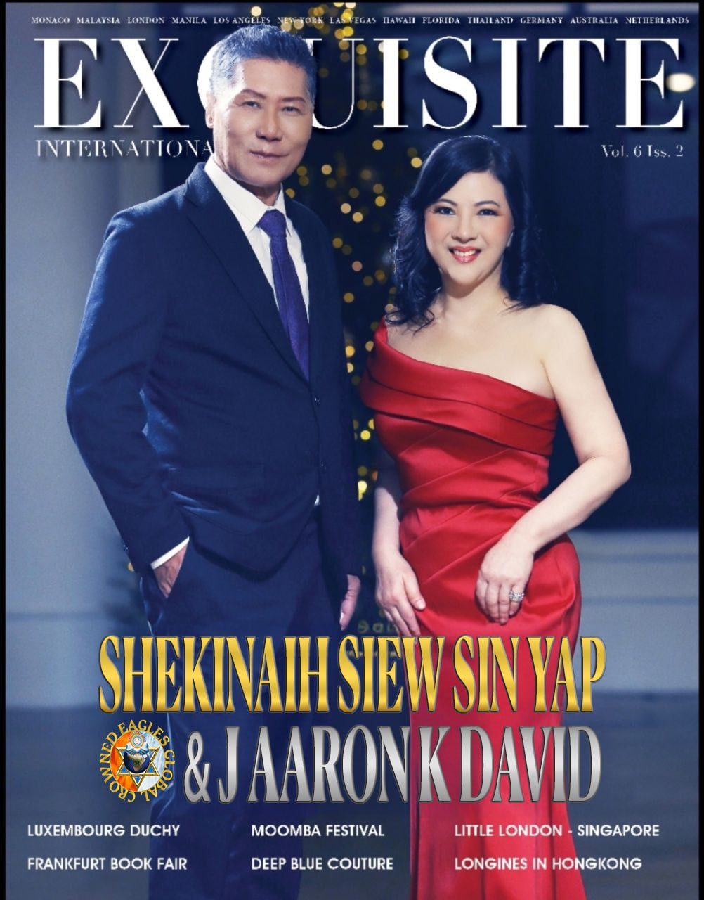